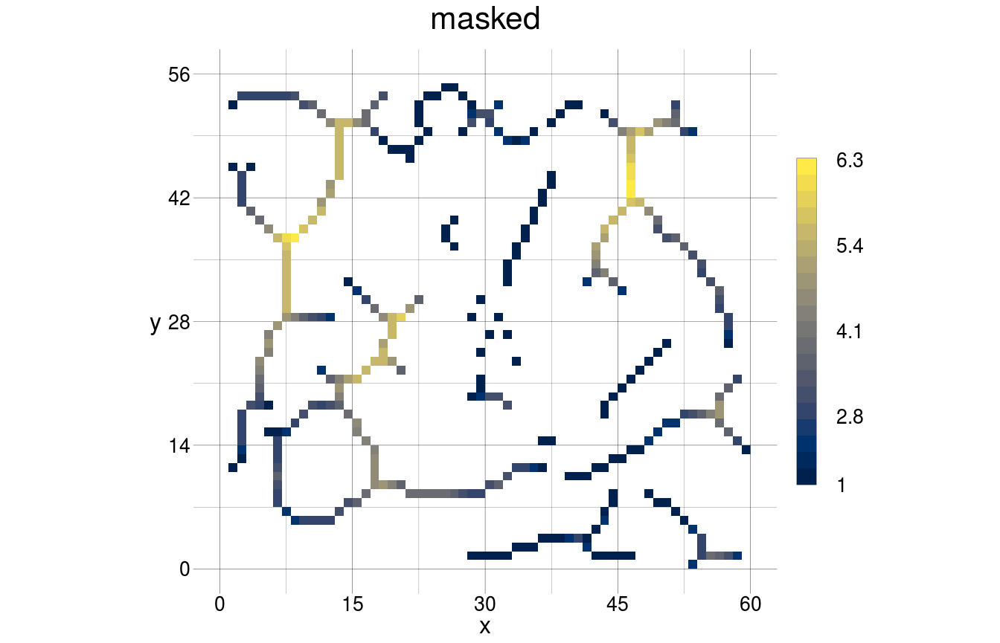
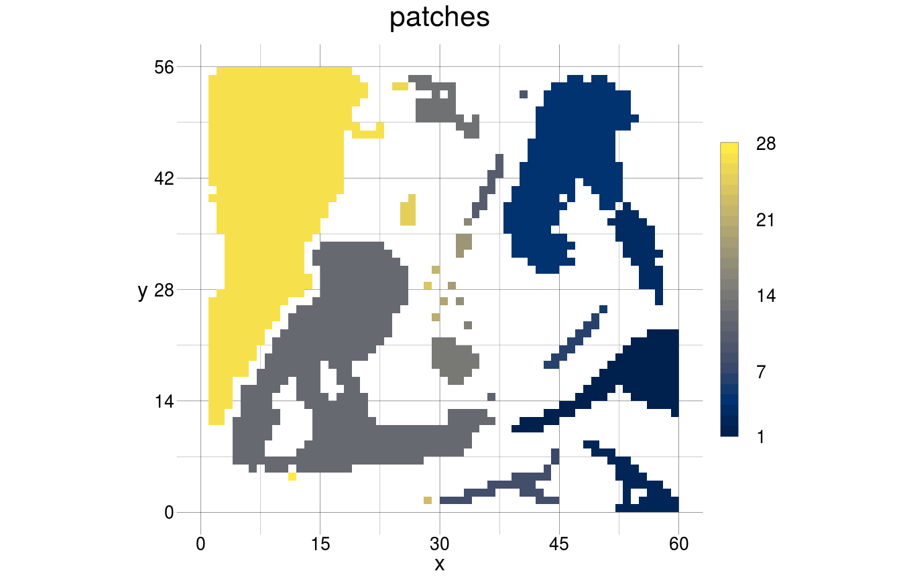
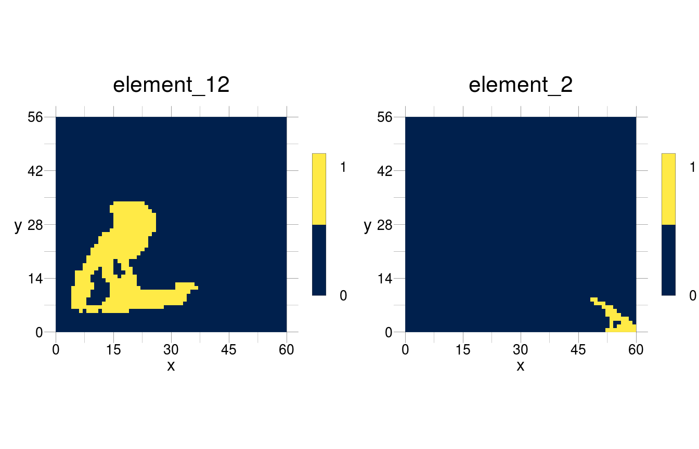
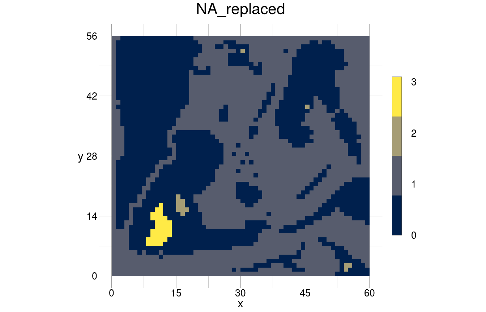
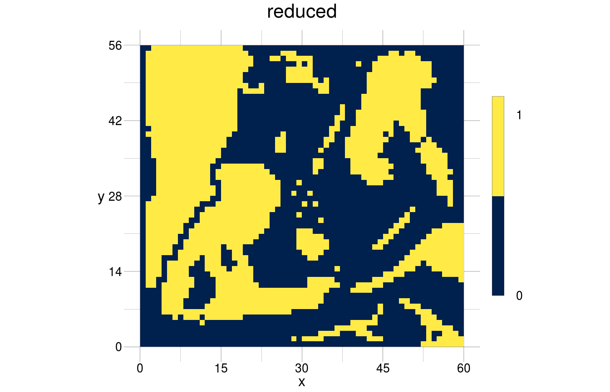
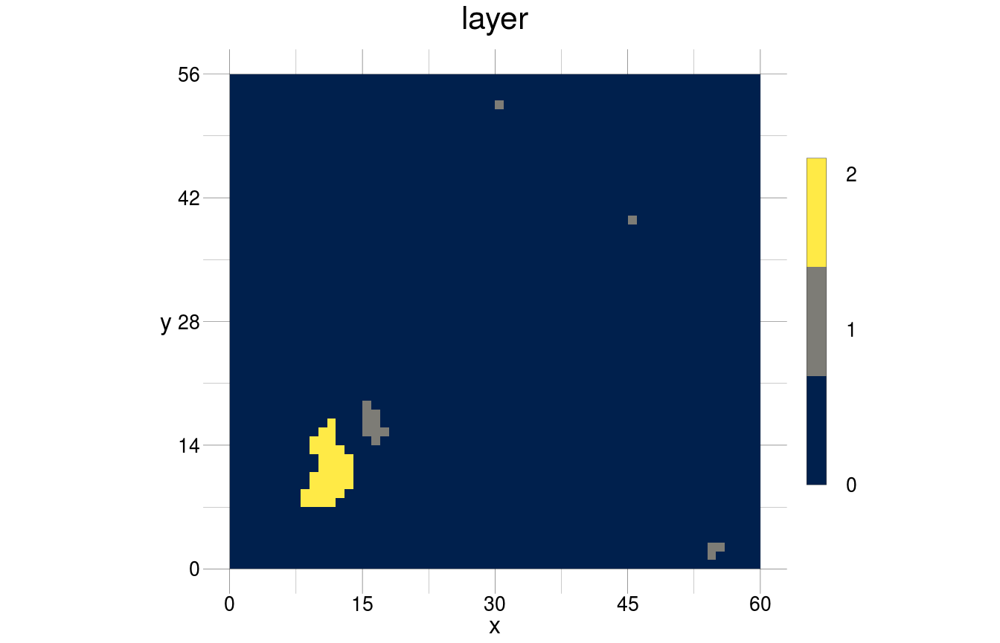
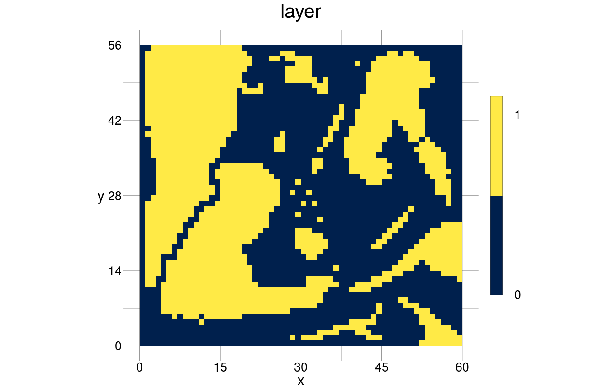
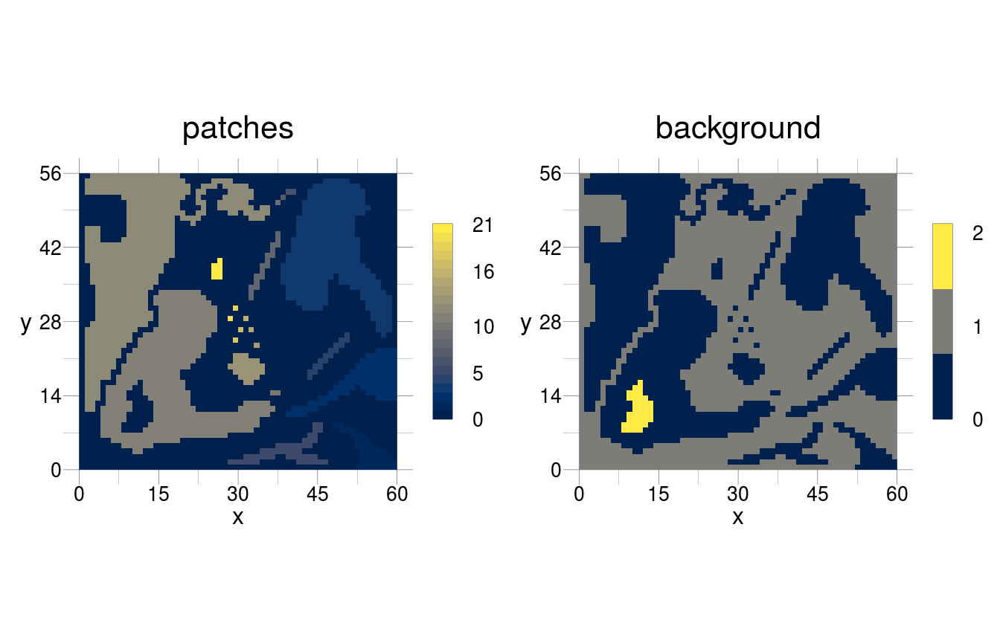
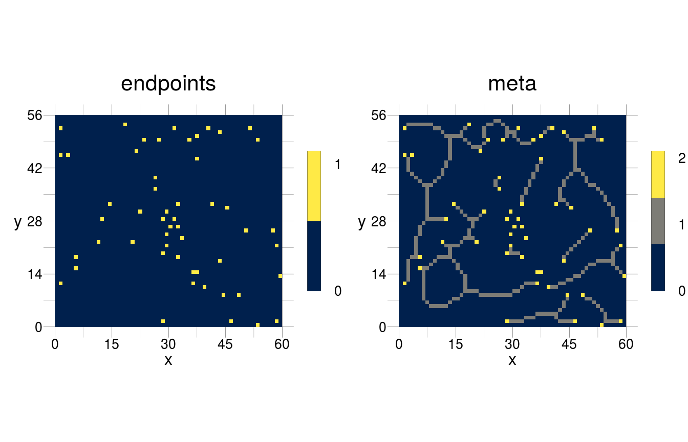

This document outlines basic operations that either stand on their own or may be necessary as basis for other operations. If you did not come from the page Usecases, you should go there now to read in the required objects.
Identify the Medial axis
The medial axis transform (MAT) results in a non-binary skeleton where each cell has the value of its distance to the original boundary. This can be calculated by determining the skeleton and the interior distance map of each patch. These two objects would be intersected by using the skeleton as mask on the distance map.
skeletonised <- binarised %>%
rSkeletonise() %>%
rFillNA()
distances <- binarised %>%
rPermute() %>%
rDistance()
MAT <- rMask(obj = distances, mask = skeletonised)
visualise(MAT)
We see that increasingly complex computations become more and more wordy, which can be a source of error and confusion. We may thus again use an algorithm. Admittedly, it is not necessarily less wordy but it represents a more explicit declaration of the steps taken to derive the final object (and does not depend on other packages). Moreover, this algorithm can be used on any object (for which it has been devised). The object is independently defined in the call to modify, in contrast to the pipeline notation that needs to be adapted every time the objects change. Eventually the “clunky” nature of this algorithm pays off when it is used multiple times in conjunction with modify.
getMedialAxis <- list(skeleton = list(operator = "rSkeletonise", background = 0),
medAxis = list(operator = "rPermute"),
medAxis = list(operator = "rDistance"),
medAxis = list(operator = "rMask", mask = "skeleton"))
MedialAxis <- modify(input = binarised, by = getMedialAxis)
visualise(MedialAxis$medAxis)
Identify openings/perforations
We may be interested in openings (or perforations, as they are called elsewhere) of foreground patches out of several reasons. Hence, we either want to end up with a raster of the openings without anything else, or a raster where the openings are labelled in a systematic way.
To derive openings, we first have to determine the foreground patches, for which the rather straightforward algorithm below can be used.
getPatches <- list(list(operator = "rBinarise", thresh = 30),
list(operator = "rPatches"))
patches <- modify(input = continuous, by = getPatches, sequential = TRUE)
visualise(patches)
We see that there are several patches that haven an opening, but there is also an “opening” between the large lower-left greyish patch and its tiny neighbour to the bottom. In some situations this tiny neighbour might be a full-grown patch and we may have to delimit it from the northern neighbour, perhaps due to some ecological considerations. To delimit patches from each other and determine only true openings, we should segregate the raster into patches and carry out our identification algorithm per patch.
getSegPatches <- list(list(operator = "rBinarise", thresh = 30),
list(operator = "rPatches"),
list(operator = "rSegregate", flatten = TRUE, background = 0))
foregroundPatches <- modify(input = continuous, by = getSegPatches, sequential = TRUE)
visualise(foregroundPatches[[c(2, 26)]])
From here, we can then invert the raster and determine and label the background patches, of which an opening would be one in a binarised raster, which results in the following algorithm.
getBGPatches <- list(background = list(operator = "rBinarise", thresh = 30),
background = list(operator = "rPatches"),
background = list(operator = "rSegregate", background = 0),
background = list(operator = "rBinarise", thresh = 1),
background = list(operator = "rPermute"),
background = list(operator = "rPatches"),
background = list(operator = "rReduce", fun = max),
background = list(operator = "rFillNA"))
backgroundPatches <- modify(input = continuous, by = getBGPatches)
visualise(backgroundPatches, trace = TRUE)
#> this object has the following history:
#> -> the object was loaded from memory
#> -> the values have been binarised
#> -> patches have been determined
#> -> the raster has been segregated
#> -> in layers: the values have been binarised
#> -> in layers: values have been invert
#> -> in layers: patches have been determined
#> -> layers have been reduced into 1 new layer
#> -> NA has been replaced with 0
We should also aggregate the foreground patches, which we can do without any further considerations, because we do not modify the morphology of the patches.

As we have set background values to 0 throughout, we end up with two rasters that don’t contain any unknown values and we can do some raster arithmetics on them. Both, foreground patches and the matrix as the first background patch (i.e. the area which is not part of the greater patch) have the value 1 after applying the above computations. All background patches that are not matrix are openings and have a value larger than 1. Hence, we can get an object where merely the openings are provided by summarising foreground and background patches and subtracting 1. The value of the resulting openings is their running number per patch in which they are embedded.
openings <- foreground + backgroundPatches - 1
visualise(openings)
Moreover, we can determine the greater patch (i.e. the patch if it had no opening) by summarising the foreground patches and the binarised openings.

In a situation where patches may be more clearly outlined, we could also use the less complex algorithm below, where we can avoid segregating the patches. From its output, some raster arithmetics can again lead to the desired result.
findOpening <- list(patches = list(operator = "rPatches"),
patches = list(operator = "rFillNA"),
background = list(operator = "rPermute"),
background = list(operator = "rPatches"),
background = list(operator = "rFillNA"))
background <- modify(input = binarised, by = findOpening, merge = TRUE)
visualise(background)
Identify signature points in a skeleton
skeleton <- rSkeletonise(binarised, background = 0)
kernels <- list(matrix(c(NA, 0, 0, NA, 1, 0, NA, 0, 0), 3, 3),
matrix(c(NA, 0, 1, 1, 1, NA, NA, 0, 1), 3, 3),
matrix(c(1, NA, 1, NA, 1, NA, NA, NA, 1), 3, 3),
matrix(c(NA, 1, NA, 0, 1, 1, 1, 0, NA), 3, 3))
getMetaSkel <- list(endpoints = list(operator = "rMatch",
kernel = matrix(c(NA, 0, 0, NA, 1, 0, NA, 0, 0), 3, 3),
background = 0),
meta = list(operator = "rBlend", overlay = "endpoints"))
skeletonMeta <- modify(input = skeleton, by = getMetaSkel, merge = TRUE)
visualise(skeletonMeta, trace = TRUE)
#> the layer 'endpoints' has the following history:
#> -> the object was loaded from memory
#> -> the values have been binarised
#> -> the morphological skeleton has been determined
#> -> cells have been matched with a 3x3 kernel with values NA 0 0 NA 1 0 NA 0 0
#> the layer 'meta' has the following history:
#> -> the object was loaded from memory
#> -> the values have been binarised
#> -> the morphological skeleton has been determined
#> -> the raster has been blended